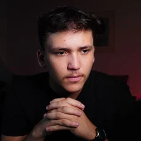

Projeto de fundação · Sons Church FC · 2026
Projeto de fundação · Sons Church FC · 2026
Da segunda-feira ao Goianão
Mais que um time, uma família.
Disciplina · Amizade · Propósito
Toda segunda, às 20h30, a gente ora, louva e ouve a Palavra. Às 21h, a bola rola. Agora queremos levar esse time para fora do anonimato, e você está sendo convidado a fundar o clube.
Leva cerca de 10 minutos de leitura. No fim da página, você decide se entra e como quer participar.
Começou como descontração. Virou ministério.
Em 25 de novembro de 2023, começamos a jogar bola com os irmãos toda segunda-feira, só para descontrair. Mas Deus tinha outro plano: vidas foram resgatadas no meio desses jogos, e o futebol virou um ministério, com o apoio da Sons Church.

Antes da bola, o altar.
Leonardo Mendes e Pastor Ednam Rufino
Quando um irmão passa por um momento delicado, pede oração ou precisa de acompanhamento, os dois estão à disposição para conduzir da melhor forma.Sons Church
A igreja apoia o projeto desde o começo. Os coletes que usamos hoje foram doados por ela.“Eu não queria que virasse um ministério. Queria só jogar bola com os irmãos. Mas Deus colocou essas vidas sob a minha responsabilidade, e hoje eu entendo o porquê.”
Da segunda-feira nasceu o time de sábado
Dos jogos de segunda, selecionamos os jogadores que encaram campo de 11. Todo sábado, esse time joga amistosos contra outras igrejas e equipes.
O futebol da comunidade
Oração, louvor, Palavra e bola. Aberto aos irmãos. É o coração do ministério e continua do mesmo jeito.O time que vai virar clube
Mais de 15 jogadores, escolhidos entre os melhores da segunda, em amistosos contra outras igrejas e equipes. É este time que queremos tirar do anonimato.Queremos que todo mundo conheça o time, e o projeto que existe por trás dele.

A história do Nilston
Nilston passou mais de 15 anos na Assembleia de Deus. Nunca se afastou da fé, mas, com o tempo, deixou de frequentar uma igreja. Foi jogando bola com a gente às segundas, entre a oração das 20h30 e o apito das 21h, que ele voltou a ter uma casa para congregar.
“Não cheguei a me afastar, mas não estava indo em nenhuma igreja.”
Às vezes a fé está lá. Falta a casa. É isso que a segunda-feira oferece.
Um responsável com nome e rosto
Leonardo Mendes é o fundador do projeto. Ele coordena as decisões e responde por elas, ao lado do Pastor Ednam Rufino no cuidado espiritual e com uma equipe de confiança em cada área: esporte, marketing, finanças e relação com as igrejas.
Leonardo Mendes
Fundador do projetoPastor Ednam Rufino
Acompanhamento espiritual dos atletasResponsáveis por área
Escolhidos entre jogadores e apoiadoresTodos
Prestação de contas mensal e abertaProjeto sério tem dono. Projeto transparente mostra quem é.
Um degrau de cada vez
Ninguém vira profissional na semana que vem. O plano tem três degraus, e cada um prepara o próximo.
Amistosos que viram conteúdo
Um amistoso todo sábado. Cada jogo gera vídeo, bastidor e história. A torcida nasce antes do primeiro campeonato.Torneios e municipal
Resultado em campo, histórico e material para mostrar a patrocinadores.Filiação e Goianão
Filiar o clube na Federação Goiana e disputar a 3ª Divisão do Campeonato Goiano.Cada degrau só começa quando o anterior estiver pago.
Os clubes novos chegaram com milhões
Olhamos para quem nasceu ou renasceu em 2026. Todos tinham uma coisa em comum: dinheiro grande desde o primeiro dia.
| Clube | Como começou | Investimento |
|---|---|---|
| Feira FC · BA | Nasceu como SAF, cerca de 60 mil seguidores na 1ª semana, contratou ex-Seleção e influenciador | Até R$ 20 mi em 3 anos |
| Agro EC · GO | Investidores do agro se fundiram à Abecat e herdaram a vaga na Série D | Cerca de R$ 11 mi imediatos |
| Centro Oeste · GO | Clube inativo comprado e transformado em SAF, subiu até a elite do Goianão 2026 | Investidor privado |
Fontes: Jornal Grande Bahia · Tribuna do Planalto · O Hoje
Eles começaram com milhões.
Nós começamos com propósito.
Redes desde o dia 1
A torcida nasce antes do primeiro jogo oficial.Visibilidade com gestão
Visibilidade sem gestão não dura. Por isso a prestação de contas é aberta.Dono da história
Quem apoia no começo vira dono da história. Esse é o nosso maior ativo.Dois caminhos. A decisão é do grupo.
O modelo jurídico define como o clube recebe dinheiro, quem decide e quem pode ganhar se o clube crescer. Compare antes de votar.
| Cenário 1 · SAF (clube-empresa) | Cenário 2 · Projeto da igreja (associação) | |
|---|---|---|
| O que é | Uma empresa do futebol, com sócios e regras claras | Uma associação sem fins lucrativos, apoiada pela igreja |
| Quem decide | Leonardo Mendes, fundador do projeto, com uma diretoria de confiança em cada área | A diretoria da associação, ligada à igreja |
| Quem pode ter participação | No futuro, investidores poderão entrar no clube, sempre por oferta regulada pela CVM | Ninguém. Apoiador doa ou patrocina, mas não vira sócio |
| Como capta dinheiro | Sócio-torcedor, patrocínio e investimento regulado | Sócio-torcedor, patrocínio e doações |
| Velocidade | Mais rápida para captar e contratar | Mais lenta, depende de doações |
| Ponto de atenção | Exige contador, advogado e governança desde o início | Pode parecer “o time de uma igreja só” para outras igrejas |
A entrada de investidores ainda não está definida. Quando acontecer, as regras, os riscos e a participação de cada um serão apresentados por escrito, com orientação de advogado.

Dois times possíveis. Qual é o nosso?
Toque no nome de cada time para ver como ele entra em campo.
Time 1 · uniforme com o símbolo da Sons Church · toque para ampliar
Time 2 · uniforme com o escudo do leão · toque para ampliar
Sons Church FC ou Cristo Reina?
| Time 1 · Sons Church FC | Time 2 · Cristo Reina C.R.S.C | |
|---|---|---|
| Nome | Sons Church FC | Cristo Reina · C.R.S.C |
| Escudo | Coração da Sons Church | Leão coroado, C.R.S.C |
| Papel da Sons | A marca do clube é a marca da igreja | Patrocinadora master, com contrato e contrapartidas |
| Onde a Sons aparece | No nome, no escudo e em tudo | Centro da camisa, site, vídeos, entrevistas e placa no campo |
| Outras igrejas | Podem hesitar em apoiar o time de outra igreja | Entram como parceiras sem conflito |
| Se a relação mudar | O clube precisa trocar de nome | Muda o patrocínio, o clube continua |
Logo no centro de todos os uniformes · destaque no site e em todo vídeo · menção em entrevistas e posts de jogo · um jogo seguido de culto na Sons por temporada · prestação de contas mensal do que foi feito com o apoio.
Quanto custa o primeiro ano
Hoje jogamos com material emprestado e cada um paga do próprio bolso. O primeiro ano custa cerca de R$ 68 mil, sem contar a filiação. Começa por equipar o time.
| Para equipar o time (uma vez só) | Conta | Valor |
|---|---|---|
| Uniformes completos | 20 atletas × 2 jogos (claro e escuro) × R$ 119 | R$ 4.760 |
| Coletes de treino · primeira linha | 20 × R$ 89 | R$ 1.780 |
| ou coletes de treino · segunda linha | 20 × R$ 35 · opção mais barata | R$ 700 |
| Bolas oficiais | 4 × R$ 150 ESTIMATIVA | R$ 600 |
| Primeiros socorros e gelo | kit inicial ESTIMATIVA | R$ 250 |
| Garrafões e squeezes | kit inicial ESTIMATIVA | R$ 200 |
| Empresa, contador inicial e registro da marca | abertura + INPI ESTIMATIVA | R$ 2.900 |
| Plataforma (site) e redes sociais | cedidos pela InnoPro Business | R$ 0 |
| Total para começar | com coletes de primeira linha | R$ 10.490 |
Com coletes de segunda linha, o total para começar cai para R$ 9.410. O site, a plataforma e a gestão das redes sociais são cedidos de graça pela InnoPro Business.
| Por amistoso | Valor |
|---|---|
| Transporte ESTIMATIVA | R$ 300 |
| Alimentação pós-jogo (20 × R$ 15) ESTIMATIVA | R$ 300 |
| Hidratação: água, isotônico e gelo ESTIMATIVA | R$ 80 |
| Lavagem dos uniformes ESTIMATIVA | R$ 60 |
| Taxa do jogo: 50% de R$ 300, pago aos organizadores | R$ 150 |
| Arbitragem: de R$ 100 a R$ 150 por equipe | R$ 150 |
| Total por jogo | R$ 1.040 |
| O ano inteiro | Valor |
|---|---|
| Equipar o time | R$ 10.490 |
| Jogos: 4 por mês × R$ 1.040 × 12 | R$ 49.920 |
| Contador: R$ 400 × 12 ESTIMATIVA | R$ 4.800 |
| Torneios: 3 × R$ 800 ESTIMATIVA | R$ 2.400 |
| Total do 1º ano | R$ 67.610 |
Fora da conta: aluguel de campo (para treinos: zero se a prefeitura ceder o espaço, ou cerca de R$ 250 por treino) e a filiação na Federação Goiana (valor a consultar). A arbitragem entra pelo valor mais alto da faixa, para a conta não ficar curta.
230 apoiadores
colocam o time em campo.
A primeira meta é bancar os amistosos de todo sábado e começar a fazer caixa para disputar campeonatos. 230 apoiadores a R$ 19,90 por mês somam R$ 4.577, o que cobre um mês de jogos (R$ 4.160) e o contador (R$ 400). Foco total: quanto antes batermos essa meta, antes o time tem uma base de apoiadores.
No site do clube você assina o sócio-torcedor ou outro plano de apoio, acompanha o contador de apoiadores e vê a prestação de contas do mês, tudo num lugar só.
Preto e branco. Simples e forte.
O símbolo da Sons Church são duas pessoas formando um coração. É isso que levamos no peito: gente que se encontra e se cuida.


Cada jogo vira história
O YouTube conta a história completa. Instagram e TikTok levam os melhores momentos para mais gente. O X reúne a comunidade e presta contas.
EXEMPLO · simulação · números são a meta para 12 mesesToque na tela para ampliar.
Toda semana: 1 vlog e 7 cortes.
Um jogo por semana vira um vlog completo no YouTube e sete cortes para Instagram e TikTok, entre trechos do vlog e bastidores. Um por dia, sem pagar produtora. E ainda tem a apresentação de um reforço do elenco toda semana.
Quem apresenta, mostra quem é
- O trabalho que faz e como pode ajudar quem assiste
- Por que aceitou entrar no projeto
- Para que ele quer fazer parte
52 vlogs, 364 cortes e um reforço por semana
Cada vídeo termina com o mesmo convite: conheça os profissionais que apoiam o projeto na nossa plataforma.Vitrine dos Voluntários: quem serve, aparece
Cada pessoa que participa do projeto, jogando ou prestando serviço, ganha um perfil na Vitrine dos Voluntários, no site do clube: o que faz, como trabalha e como falar com ela. Os vlogs levam o público até lá.

Produzo vídeos para empresas e eventos. Entrei no projeto porque o futebol de segunda me trouxe de volta para perto de Deus.
- Foto, nome e profissão
- O que você faz e os serviços que oferece
- Por que você entrou no projeto
- Seus vídeos no projeto e o seu portfólio
- Contato direto: WhatsApp, Instagram e site
A casa oficial do Sons
Notícias, elenco, jogos, sócio-torcedor, loja e prestação de contas no mesmo lugar. Toque na imagem para ampliar.
EXEMPLO · simulação da página inicial · jogos, notícias e patrocinadores ilustrativosToda semana, um reforço apresentado.
Cada jogador do nosso elenco ganha a sua apresentação oficial, como nos grandes clubes. Uma por semana. Dias depois, quem foi apresentado assume o vlog do jogo. Mais conteúdo toda semana, e cada jogador vira protagonista.
Teaser
“Alguém está chegando… Ele vem para o ataque. Palpites nos comentários.”É do Sons!
Arte “Here we go” ou “Bem-vindo” com o jogador vestindo o manto.Card e ficha
Entra no elenco do site: posição, número, igreja, profissão e o perfil de contato.Ele grava o vlog
O reforço da semana assume o “Vem comigo num dia de jogo” e vira o protagonista dos cortes.15 jogadores no elenco = 15 semanas de apresentações. Quase 4 meses de conteúdo só com quem já está aqui.
Assim o elenco aparece no site
Cada reforço ganha arte de anúncio, card no elenco e biografia própria. Toque em um jogador para ler a história dele.
EXEMPLO · simulação da página ElencoSons Church FCElenco 2027
Nenhum goleiro anunciado ainda.
Quem assina agora é fundador para sempre
O sócio-torcedor é uma assinatura com benefícios. Ele não compra parte do clube: compra lugar na história. Começamos com benefícios que conseguimos cumprir de verdade, e eles crescem junto com o clube.
Proposta · valores a validar com o grupoTorcedor
- Cadastro na família Sons
- Avisos de jogos e conteúdos
- Acesso à comunidade
- Voto nas enquetes abertas
Apoiador
- Nome e cidade no painel ao vivo de apoiadores
- Kit Boas-vindas com cartão de sócio
- Nome nos créditos do vlog da semana
- Vlogs antes de todo mundo
- Grupo exclusivo de apoiadores
- 10% na loja
Fundador
- Tudo do Apoiador
- Selo dourado de Fundador no painel
- Kit Fundador com certificado numerado
- Camisa a preço de custo (a partir de R$ 79,90)
- Uma segunda-feira com o elenco: culto e jogo
- 20% na loja
Igreja parceira
- Marca no site e nos vídeos
- Jogo seguido de culto na igreja
- Kit Igreja com placa de parceira
- Camisas a preço de custo para os membros
Para onde vai o dinheiro: cada real entra na conta do projeto e aparece na prestação de contas do mês. A primeira meta é chegar a 230 apoiadores para bancar os amistosos. Depois, fazer caixa para os campeonatos.
Comparamos com planos de entrada de 2026: Paysandu R$ 14,90 · Paraná Clube R$ 19,90 e R$ 49,89 · Sport R$ 29,90 · Portuguesa grátis. Ficamos abaixo deles no Apoiador porque ainda não temos estádio nem jogos oficiais. Fontes: O Liberal · Bem Paraná · Diario de Pernambuco · MKT Esportivo
Fé e mercado, com as regras na mesa
Dá para o cristão participar desses dois mundos de forma honesta. Separamos duas coisas que muita gente mistura: participar do clube e investir no clube. O token começa pela nossa comunidade no X. A participação na SAF vem depois, por fases.
O que nós vamos fazer
- Criar a comunidade do clube no X e conduzir tudo por lá, às claras
- Criar e lançar o token do clube, com regras públicas desde o início
- Buscar o cadastro do token nas plataformas onde ele poderá ser comprado
- Publicar a carteira do clube: quanto guardamos, quanto vendemos e onde usamos cada real
- Dar uso ao token: votações, experiências e acesso aos bastidores
- Lançar só depois do parecer de um advogado especialista e dentro das regras da CVM
O que você pode fazer
- Entrar na comunidade no X e ajudar o projeto a ser conhecido
- Comprar os seus tokens nas plataformas onde ele estiver cadastrado
- Usar o token para votar e participar das experiências do clube
- Guardar ou vender quando quiser
Dono majoritário
O modelo de Botafogo, Cruzeiro, Vasco e Bahia: um grupo compra a maior parte da SAF e a associação fica com uma fatia menor e o direito de proteger nome e símbolos.Ações na bolsa
Comum no Chile e na Europa. A Universidad Católica captou US$ 11 milhões com cerca de 3.800 novos acionistas. Exige registro de companhia aberta na CVM.Crowdfunding
A CVM permite que SAFs com receita de até R$ 40 milhões por ano vendam participação a torcedores por plataforma autorizada. É o caminho que cabe num clube do nosso tamanho.Debêntures-fut
Empréstimo com juros, não participação. Hoje, só para investidores qualificados, com prazo mínimo de dois anos.Nossa leitura: ainda não
- Sem receita e sem histórico, não há como dar um valor justo ao clube. Quem entrasse agora pagaria pela fé no projeto, e é justamente esse apelo que a CVM proíbe usar.
- Advogado, plataforma e documentos custam mais do que um clube novo consegue captar com segurança.
- O foco do primeiro ano é outro: formar a base de apoiadores.
- Cada fase depende de análise e aprovação do jurídico.
O que você precisa saber
- Você pode perder o valor investido.
- Não há garantia de retorno, nem de prazo para vender sua parte.
- A decisão deve ser financeira. Amor ao time não é motivo para investir.
Compromisso de transparência
- Prestação de contas mensal e pública no site.
- Nenhum real de investimento captado antes da estrutura jurídica definida.
- Contrato e riscos explicados por escrito antes de qualquer investimento.
Conteúdo informativo. Não é oferta de investimento nem orientação jurídica ou financeira. Referências: Migalhas · Máquina do Esporte · BB Investalk · Mattos Filho · Machado Meyer
Tudo gira em torno do torcedor
O conteúdo atrai. A comunidade aproxima. Sócios, loja e parceiros sustentam. E o que entra volta para o campo, em mais conteúdo e em contas abertas.
Conteúdo
- Um vlog e 7 cortes por semana
- Um reforço apresentado por semana
- Instagram, TikTok e YouTube
- Comunidade do clube no X
Comunidade
- A segunda-feira: culto e bola
- Culto antes dos amistosos, com o adversário junto
- Igrejas parceiras, com selo e plano próprio
- Grupo exclusivo de apoiadores
Receita
- Sócio-torcedor e painel ao vivo
- Loja e gráfica parceira, sob demanda
- Kits para sócios e igrejas
- Marcas parceiras e token do clube
Retorno
- Prestação de contas todo mês
- Vitrine dos Voluntários: clientes para quem serve
- Campo com a prefeitura, sem custo
- Escolinha para crianças, no futuro
Cada parte alimenta a seguinte: quem chega pelo vídeo conhece a segunda-feira, vira sócio, recebe o kit em casa e aparece no próximo vlog.
O clube chega na mão do sócio
Loja e gráfica parceira trabalham sob demanda: nada de estoque parado nem dinheiro preso. Cada kit sai com a marca de quem produziu.
Kit Boas-vindas
- Cartão de sócio impresso, com nome
- Adesivo do escudo
- Carta de boas-vindas assinada pelo elenco
Kit Fundador
- Tudo do Kit Boas-vindas
- Certificado impresso e numerado: Fundador nº 001, 002, 003...
- Pin do escudo
- Manto Fundador 2026, opcional, a preço de custo (a partir de R$ 79,90). Edição que não volta a ser produzida.
Kit Igreja
- Placa “Igreja Parceira 2026”
- Flâmula do clube
- Quadro com a foto do jogo na igreja
Visibilidade em cada entrega
- Selo “Produzido por” em todo kit e camisa
- Perfil na Vitrine dos Voluntários, como parceiro
- Vlog de entrega dos kits, com a marca marcada
- Prioridade em todos os pedidos do clube: camisas, coletes e banners
612 fundadores antes do primeiro jogo
O Agro Esporte Clube ainda não entrou em campo e já tem 612 nomes na lista de sócio fundador, com manto exclusivo de 2026 e placa numerada. O que cria valor é pertencer desde o começo.Itens e custos a cotar com a gráfica parceira. Referência: Agro Esporte Clube
A estrutura que cresce com o clube
Hoje somos jogadores, uma equipe de mídia e muita fé. Para chegar ao Goianão, o clube vai precisar de mais gente boa. Esses profissionais podem entrar desde já, pela Vitrine dos Voluntários.
Treinador fixo
Comanda treinos e jogos com método, e não só no dia do jogo.Treinador de goleiros
A posição que mais decide jogo e a que menos recebe atenção no amador.Fisioterapeuta
Prevenção e recuperação de lesões. Jogador inteiro joga mais e por mais tempo.Preparador físico
Condicionamento para aguentar torneio, viagem e sequência de jogos.Vídeo, design e tráfego
Quem já faz o motor de conteúdo girar, com crédito em cada peça.Categorias de base
Formar atletas é criar patrimônio. Pelas regras da FIFA, o clube que forma recebe uma parte das transferências futuras do jogador.Por que a Vitrine dos Voluntários faz a conta fechar
Quando o clube tiver receita para contratar, quem serviu desde o começo tem prioridade.
O que o voluntário ganha
Crédito em tudo
Seu @ em todo vídeo, post e peça que você produzir.Perfil no site
Na Vitrine dos Voluntários: o que você faz, por que entrou no projeto e o seu contato direto.Indicação prioritária
Para patrocinadores e parceiros do clube que precisarem do seu serviço.Certificado de fundador
Reconhecimento oficial como parte da fundação do projeto.Neste começo não há salário. Há vitrine, reconhecimento e um propósito maior que o jogo.
O que pedimos de quem entra
Regras claras desde o começo evitam frustração depois. Valem para jogadores e para quem ajuda com serviço.
- Vida na igreja. Participar de uma igreja ou denominação cristã pelo menos uma vez por semana. Confirmado por autodeclaração no cadastro e pela indicação do seu pastor ou líder.
- Conduta. Respeito dentro e fora de campo. A camisa representa o clube e a nossa fé.
- Entregas no prazo. Cada um combina um cronograma de acordo com a sua disponibilidade e cumpre.
- Vlog quando escalado. Gravar o “Vem comigo num dia de jogo” quando for a sua vez.
- Uniforme por conta própria, por enquanto. Até o projeto ter caixa para os uniformes, cada jogador paga o seu (R$ 119).
Perguntas que todo mundo faz
Preciso pagar para participar?
Não para entrar no projeto. Neste começo, cada jogador paga o próprio uniforme (R$ 119) até o projeto ter caixa para isso. Contribuir com dinheiro é opcional.
Vou receber salário?
Não agora. O clube começa sem dinheiro. O que oferecemos é vitrine para o seu trabalho, crédito em tudo que você produzir e indicação para parceiros.
Isso é pirâmide ou promessa de dinheiro fácil?
Não. Ninguém ganha por trazer pessoas. O sócio-torcedor é uma assinatura com benefícios. Investimento, se existir, só no cenário SAF, por plataforma autorizada pela CVM e com os riscos por escrito.
Para onde vai o dinheiro?
Para a conta empresarial do projeto. Todo mês publicamos quanto entrou, quanto saiu e no que foi gasto.
Quem manda no clube?
Leonardo Mendes, fundador do projeto, coordena e responde pelas decisões. Cada área tem um responsável. O grupo vota nas decisões que mudam o rumo do projeto, como o cenário e o uniforme.
E se não der certo?
Cada degrau só começa quando o anterior estiver pago. Se uma meta não for batida, a gente segura o passo, presta contas e decide junto o que fazer.
Preciso ser da Sons Church?
Não. Precisa participar de uma igreja cristã pelo menos uma vez por semana.
Você está dentro?
Leva 2 minutos. Suas respostas vão direto para Leonardo Mendes, fundador do projeto.
- Até 7 dias. Convite para a reunião de fundação pelo WhatsApp.
- Reunião de fundação. Votação do cenário e do uniforme, e escolha dos responsáveis por área.
- Primeiros 30 dias. Abertura das redes, primeiro vlog e campanha dos 230 apoiadores.
- Todo mês. Prestação de contas aberta no site.